Reanálisis de videos de micromoción — Caso 3
Trampa de Paul anular · esporas de licopodio · análisis reproducible GPT-6-Luna medium
Comparación por video
Se muestran todos los ajustes obtenidos, aun cuando fueron descartados. La dispersión del centro está expresada como desviación bootstrap en x/y.
| Video | Trazas | c ± error | Q/m ± error (C/kg) | σ(c_i) | σ centro (px) | Estado |
|---|---|---|---|---|---|---|
| WIN_20260624_14_48_04_Pro | 311 | 0.085 ± 0.0398 | 0.000141 ± 6.62e-05 | 0.168 | 371 / 409 px | No validado: False |
| WIN_20260624_14_50_41_Pro | 22 | 0.0215 ± 0.199 | 3.58e-05 ± 0.000331 | 0.0176 | 1.01e+03 / 1.02e+03 px | No validado: False |
| WIN_20260624_14_51_58_Pro | 193 | 0.0266 ± 0.0446 | 4.43e-05 ± 7.42e-05 | 0.0602 | 657 / 610 px | No validado: False |
| WIN_20260624_14_53_43_Pro | 135 | 0.0519 ± 0.0256 | 8.63e-05 ± 4.27e-05 | 0.0703 | 1.02e+03 / 1.17e+03 px | No validado: False |
| WIN_20260624_14_54_49_Pro | 102 | 0.0355 ± 0.0293 | 5.91e-05 ± 4.88e-05 | 0.0452 | 1.36e+03 / 1.4e+03 px | No validado: False |
| WIN_20260624_14_57_38_Pro | 66 | 0.431 ± 0.637 | 0.000717 ± 0.00106 | 0.413 | 234 / 291 px | No validado: False |
| WIN_20260624_14_58_34_Pro | 98 | 0.604 ± 0.275 | 0.001 ± 0.000457 | 0.743 | 35.8 / 34.1 px | No validado: False |
| WIN_20260624_14_59_45_Pro | 136 | 0.00547 ± 0.0385 | 9.1e-06 ± 6.4e-05 | 0.0179 | 1.22e+03 / 1.41e+03 px | No validado: False |
| WIN_20260624_15_00_52_Pro | 45 | 0.0869 ± 0.0695 | 0.000144 ± 0.000116 | 0.137 | 371 / 362 px | No validado: False |
| WIN_20260624_15_01_24_Pro | 75 | 0.0744 ± 0.0834 | 0.000124 ± 0.000139 | 0.13 | 760 / 812 px | No validado: False |
| WIN_20260624_15_02_20_Pro | 65 | 0.0243 ± 0.092 | 4.04e-05 ± 0.000153 | 0.0166 | 1.28e+03 / 1.22e+03 px | No validado: False |
| WIN_20260624_15_03_57_Pro | 117 | 0.24 ± 0.106 | 0.000399 ± 0.000177 | 0.509 | 192 / 176 px | No validado: False |
| WIN_20260624_15_04_54_Pro | 26 | 0.195 ± 0.267 | 0.000325 ± 0.000444 | 0.211 | 477 / 447 px | No validado: False |
| WIN_20260624_15_06_06_Pro | 103 | 0.239 ± 0.118 | 0.000397 ± 0.000196 | 0.377 | 244 / 290 px | No validado: False |
| WIN_20260624_15_07_04_Pro | 75 | 0.231 ± 0.114 | 0.000384 ± 0.00019 | 0.398 | 442 / 431 px | No validado: False |
| WIN_20260624_15_08_05_Pro | 113 | 0.0157 ± 0.0698 | 2.61e-05 ± 0.000116 | 0.0248 | 422 / 373 px | No validado: False |
| WIN_20260624_15_09_48_Pro | 57 | 0.253 ± 0.105 | 0.00042 ± 0.000175 | 0.381 | 174 / 135 px | No validado: False |
| WIN_20260624_15_10_37_Pro | 69 | 0.12 ± 0.0717 | 0.0002 ± 0.000119 | 0.106 | 962 / 826 px | No validado: False |
| WIN_20260624_15_12_03_Pro | 84 | 0.0227 ± 0.0619 | 3.78e-05 ± 0.000103 | 0.036 | 1.08e+03 / 1.14e+03 px | No validado: False |
| WIN_20260624_15_13_34_Pro | 48 | 0.0184 ± 0.1 | 3.07e-05 ± 0.000167 | 0.0387 | 971 / 898 px | No validado: False |
| WIN_20260624_15_14_39_Pro | 94 | 0.0349 ± 0.0334 | 5.8e-05 ± 5.56e-05 | 0.076 | 669 / 674 px | No validado: False |
Qué hice
- Tomé un cuadro cada 30 frames y trabajé con el canal rojo.
- Usé umbral fijo 20, apertura morfológica 3×3, área 18–2200 px², bounding box menor que 20000 px² y elongación mínima 2.
- Esqueleticé con Zhang–Suen y medí longitud de arco de 8-conectividad.
- Ajusté simultáneamente
L=cRy el centro mediante mínimos cuadrados robustos. - Usé 250 remuestras bootstrap del centro y sensibilidad con umbrales 15 y 25.
- Convertí condicionalmente mediante
Q/m = c r0² (2πf)²/(4 VAC), con VAC=1175 V, f=50 Hz y r0=8,9 mm.
Criterios de descarte y límites
Se requerían al menos 20 trazas, desviación bootstrap menor que 10 px en ambas coordenadas y 0<c<0,908. Los centros inestables hacen que R y c no estén identificados. Por eso no se seleccionó artificialmente un “mejor” video ni se usó la tabla de resultados del README como entrada. Para obtener una medición física haría falta la revisión semiautomática, cuadro por cuadro, de reflejos, fusiones y trazas falsas que el README describe pero no especifica.
Figuras por video
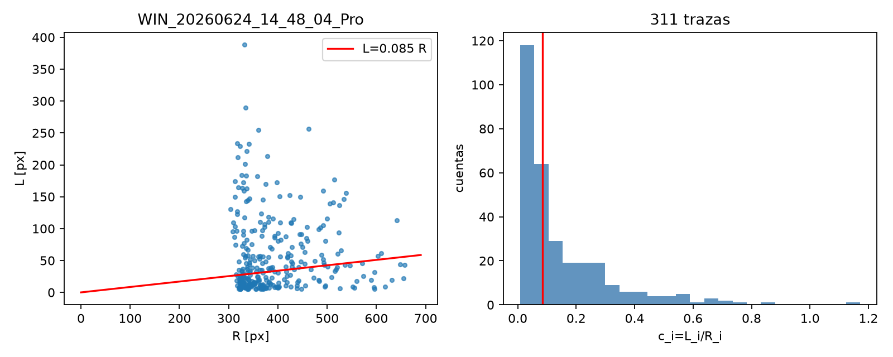
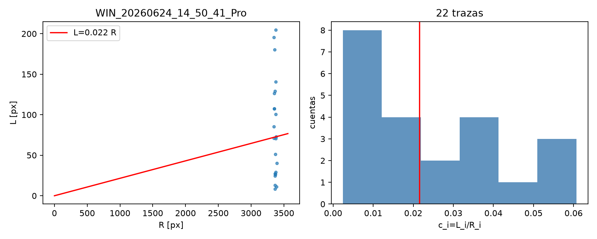
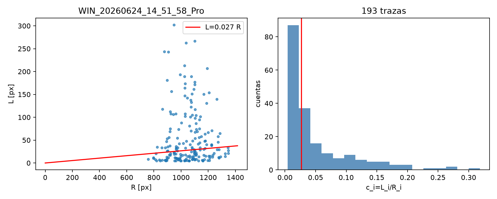
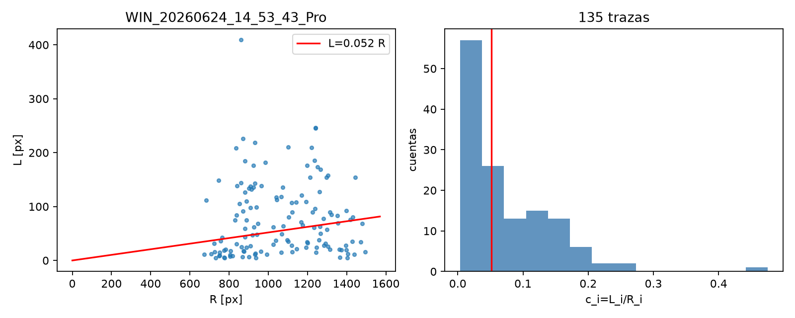
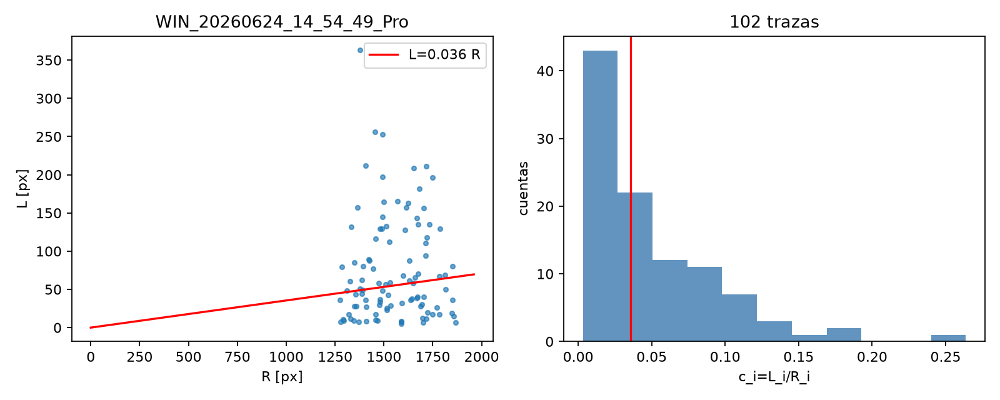
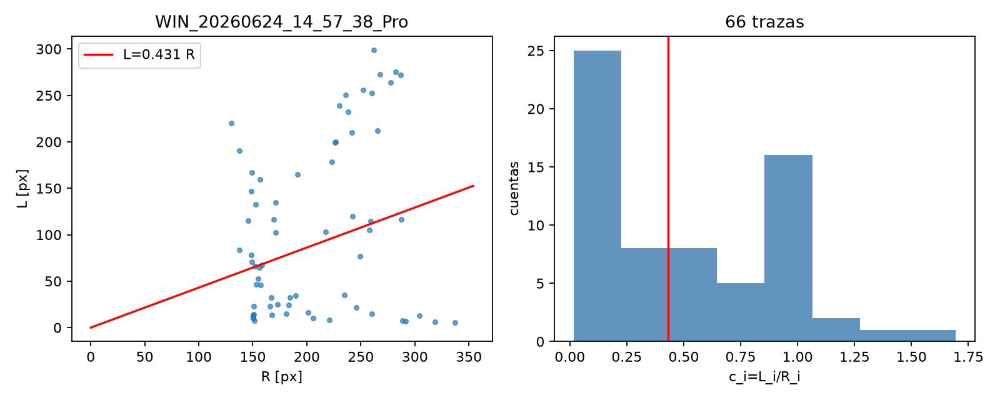
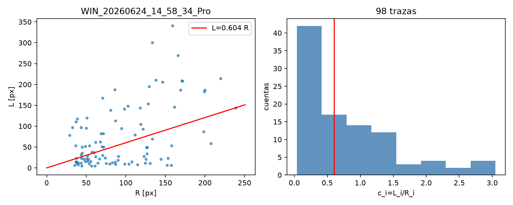
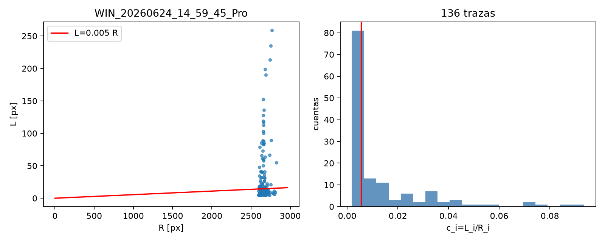
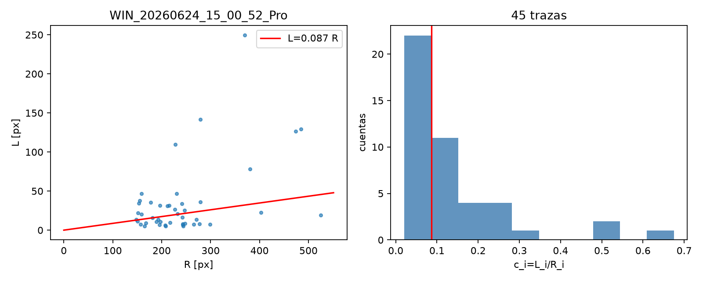
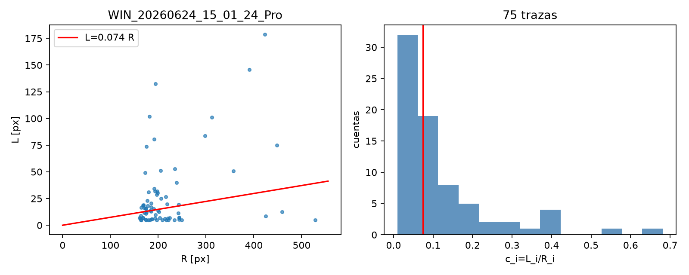
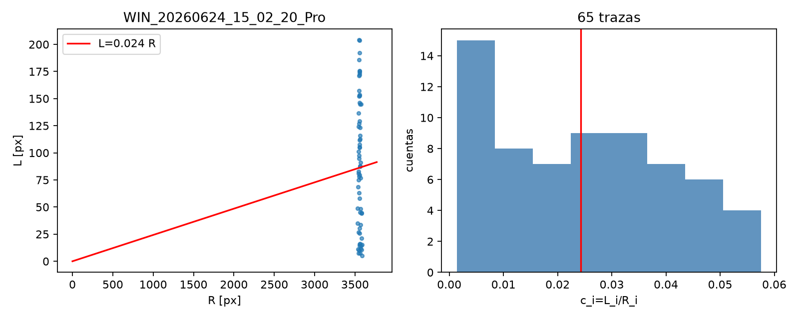
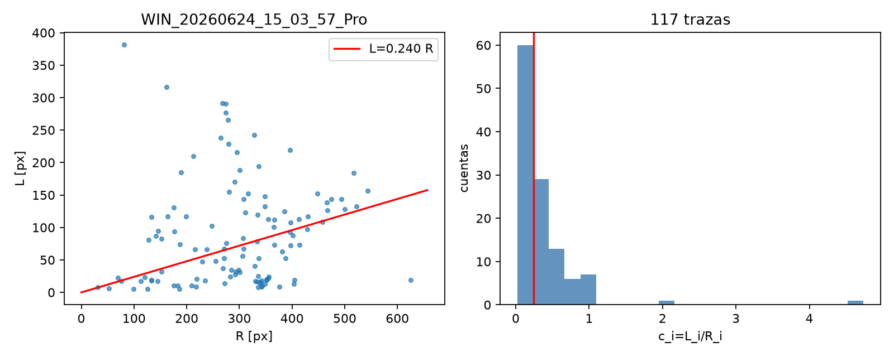
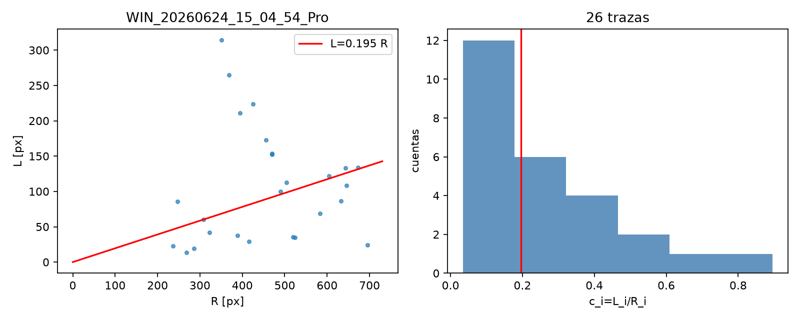
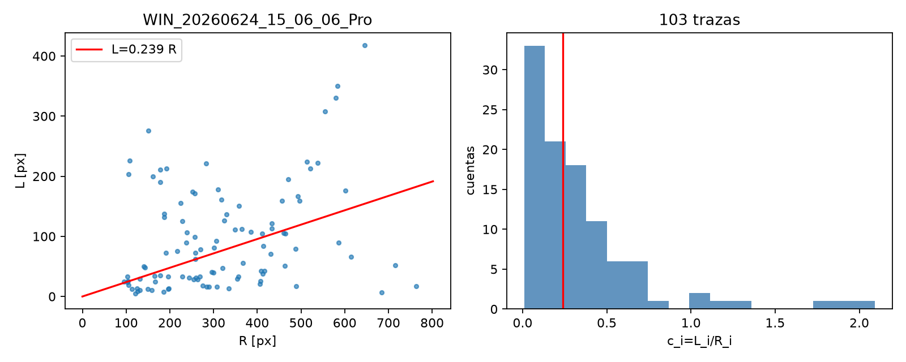
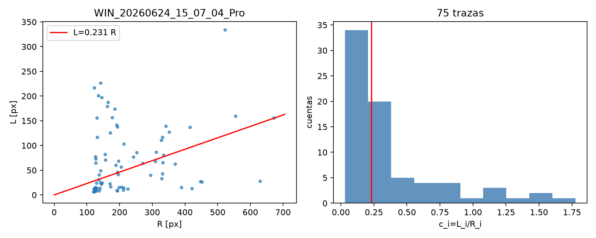
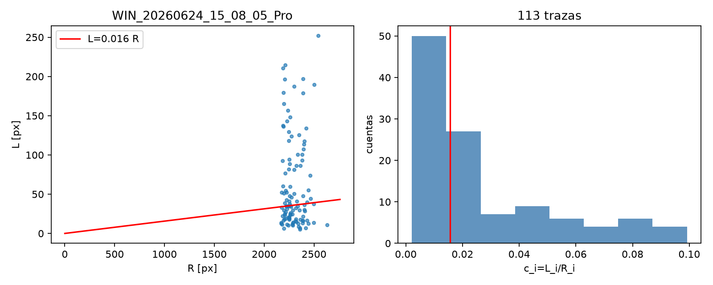
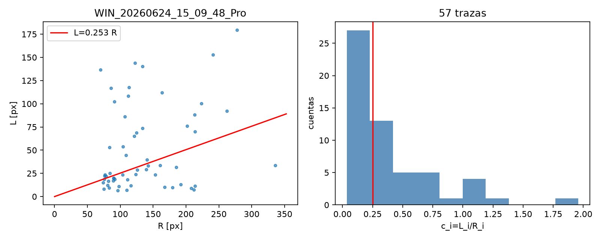
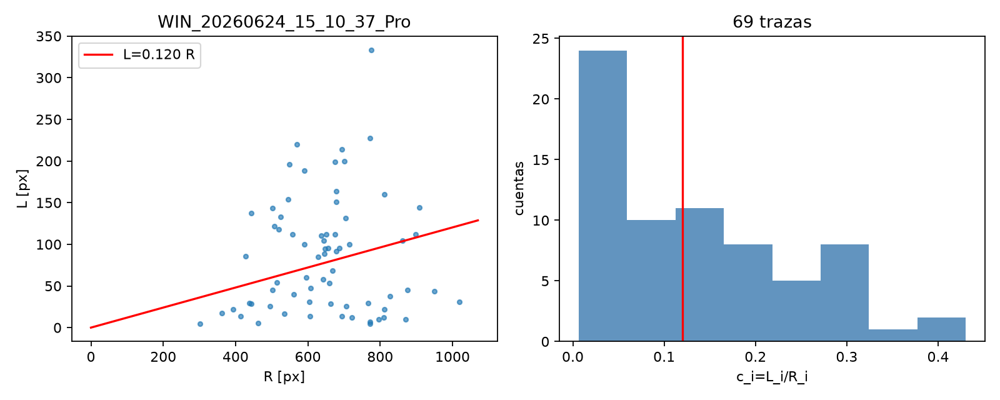
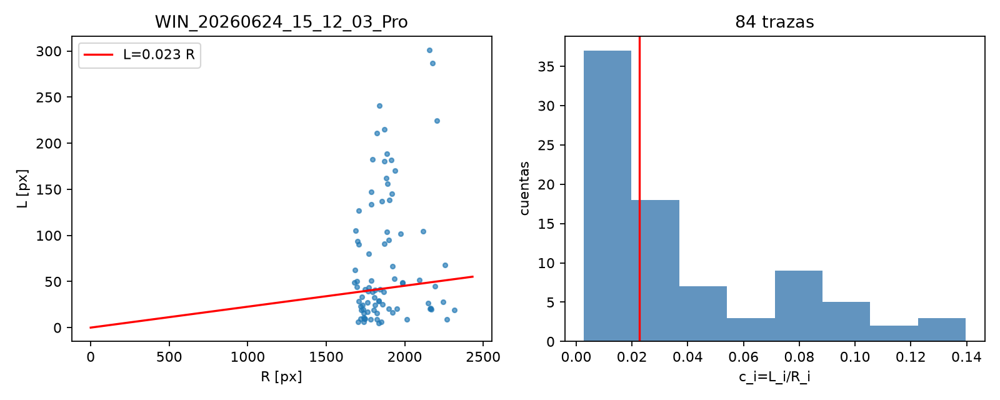
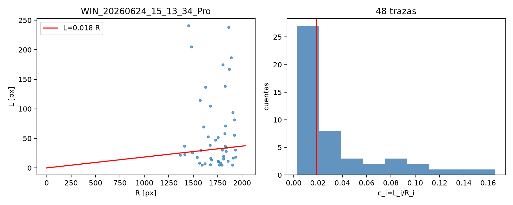
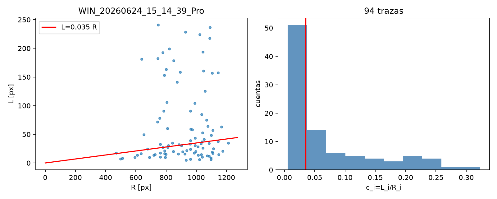
Archivos para reproducir
Código · CSV · Decisiones · Parámetros